Richard Stallman – haker i jeden z twórców ruchu wolnego oprogramowania, założyciel projektu GNU.
GNU zapoczątkowany został przez Richarda Stallmana i był pierwszym projektem Free Software Foundation.
GNU - uniksopodobny system operacyjny złożony wyłącznie z wolnego oprogramowania.
Linux system operacyjny który powstał 17 września 1991r a jego twórcą jest Linus Torvalds. Linuks jest przykładem wolnego i otwartego oprogramowania co oznacza iż system ten może być dowolnie wykorzystywany, modyfikowany i rozpowszechniany.
ls - Wyświetla zawartość katalogu.
pwd - Wyświetlenie ścieżki dostępu do bieżącego katalogu.
cd.. - Przejście do katalogu nadrzędnego.
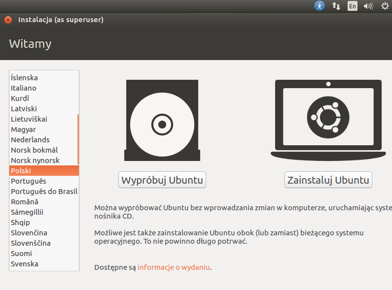
"Wybór języka i instalacja"
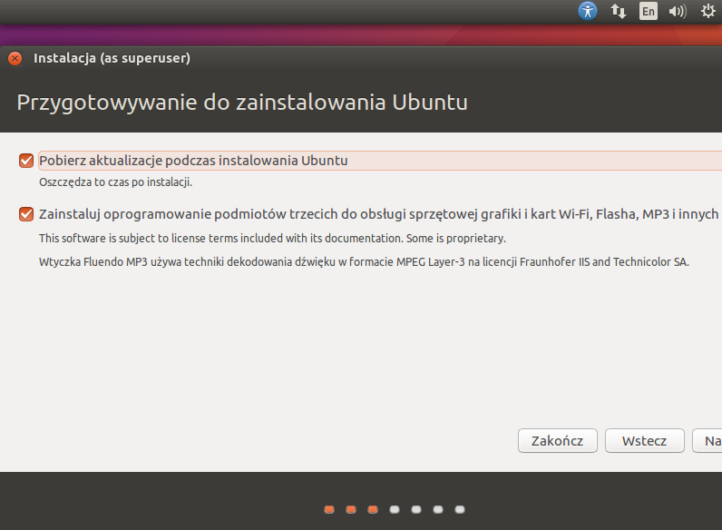
"Przygotowanie do instalacji"
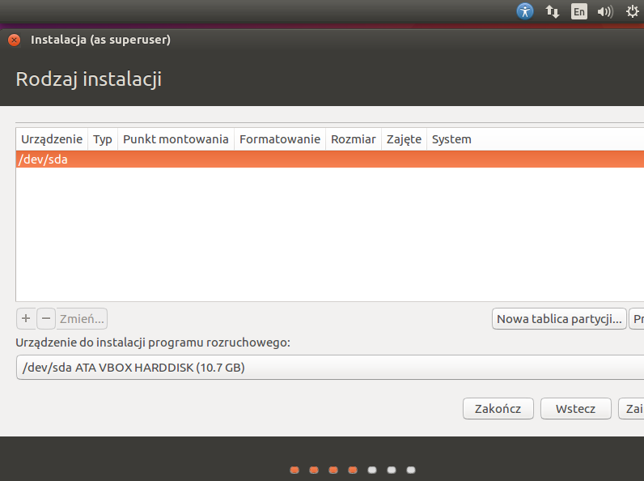
"Tworzenie i wybór partycji z przeznaczonego miejsca"
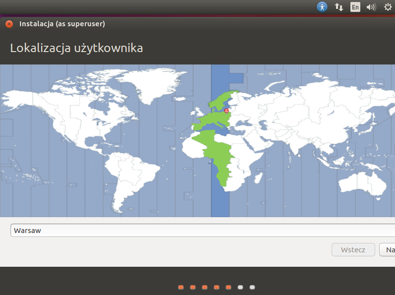
"Wybór strefy czasowej"
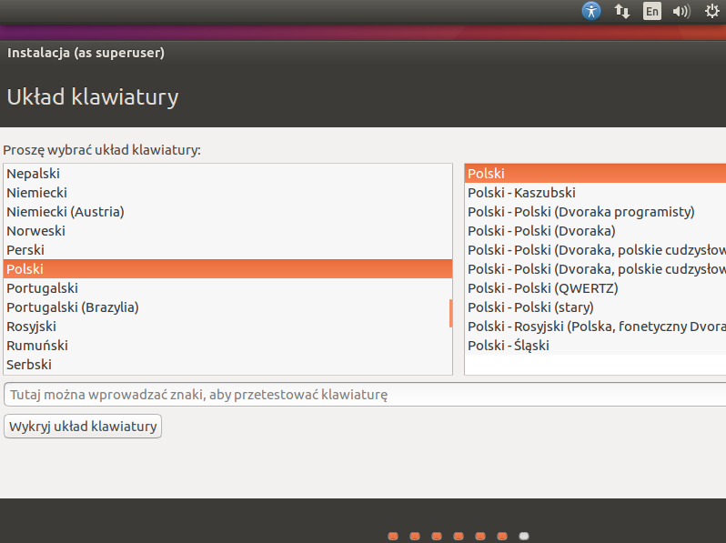
"Wybór dialektu"
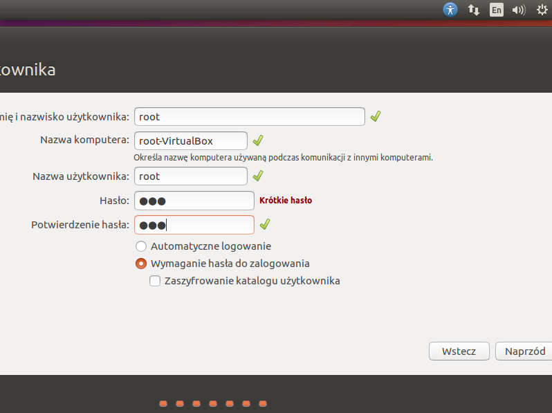
"Ustawienie nazwy użytkownika i hasła"
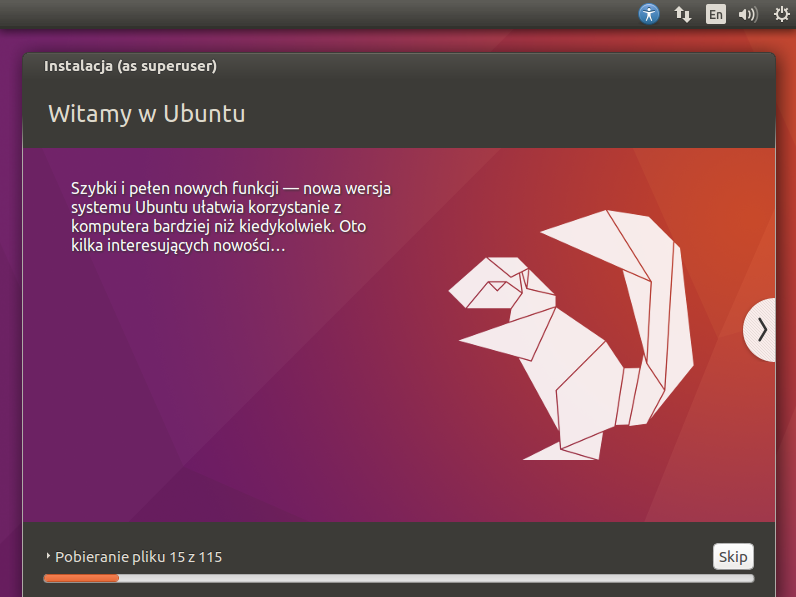
"Proces instalacji"
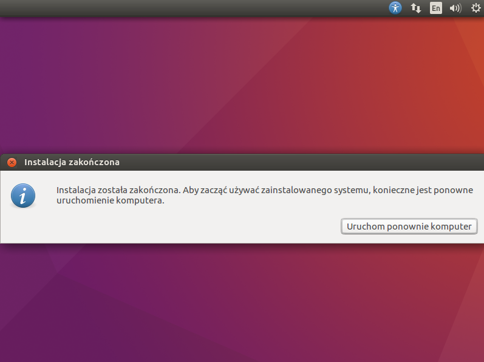
"Ponowne uruchomienie"
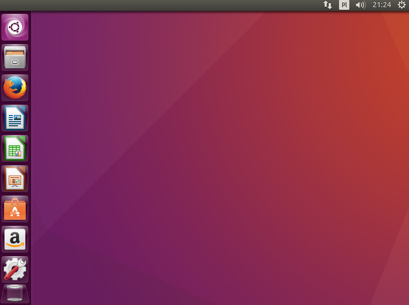
"Linux gotowy do pracy"
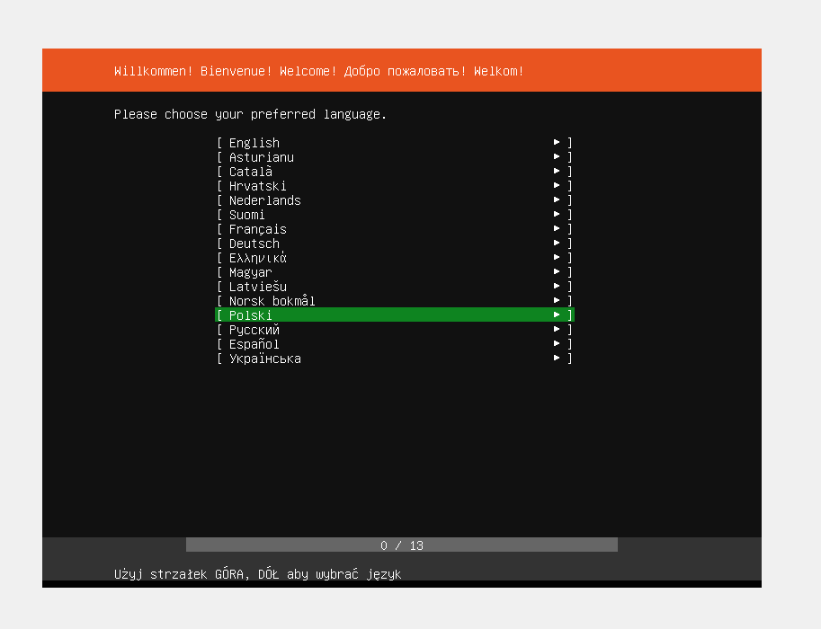
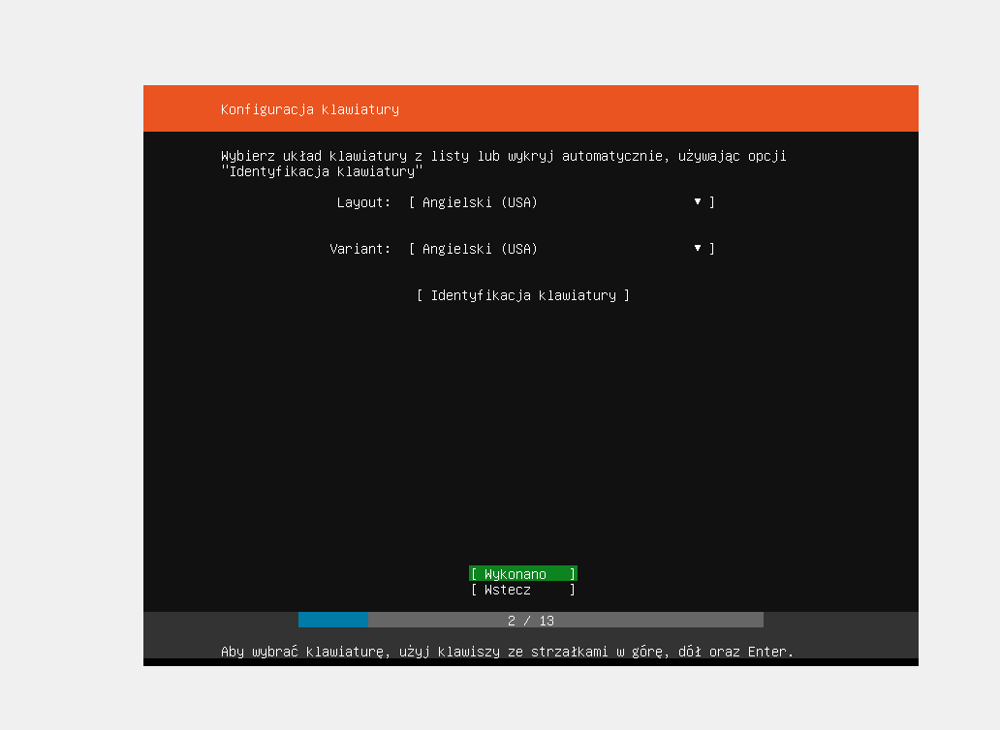
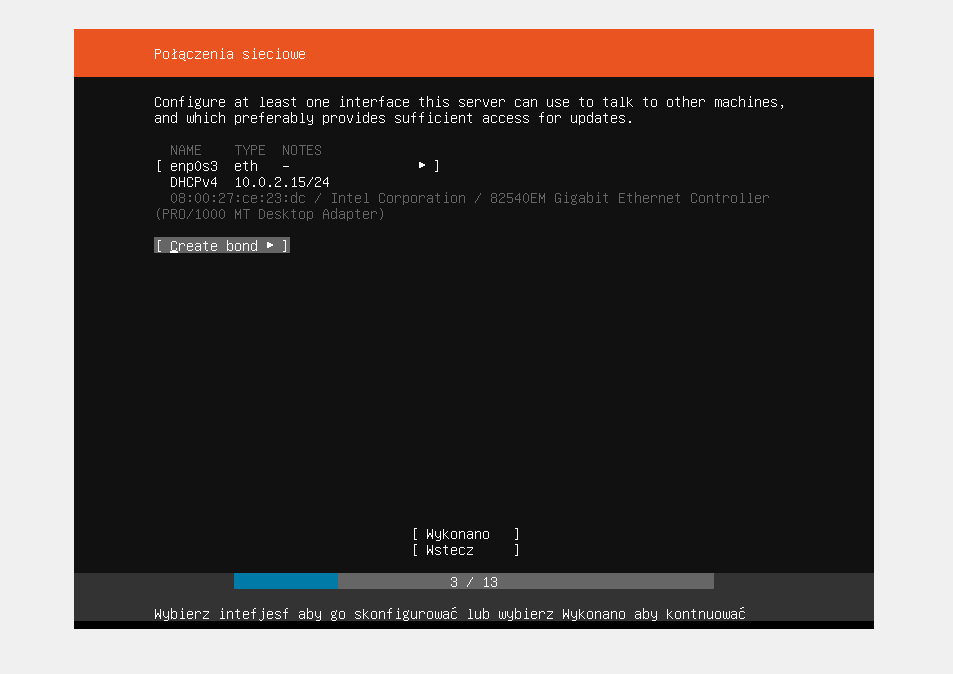
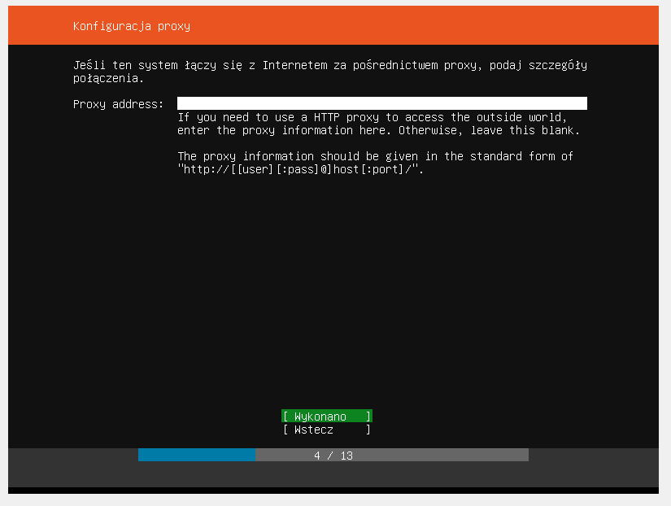
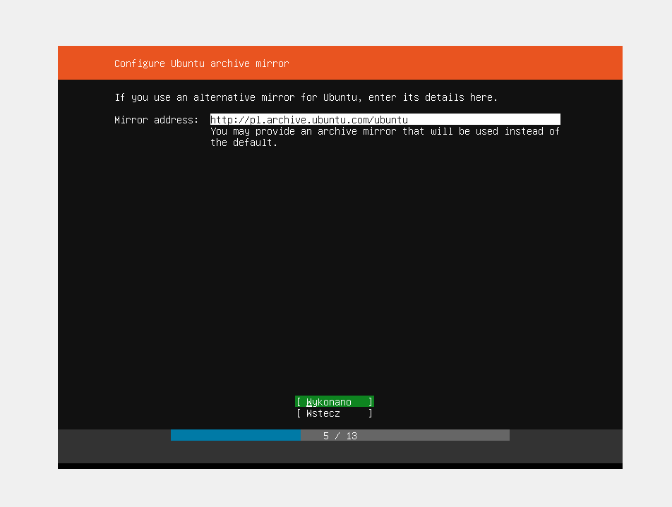
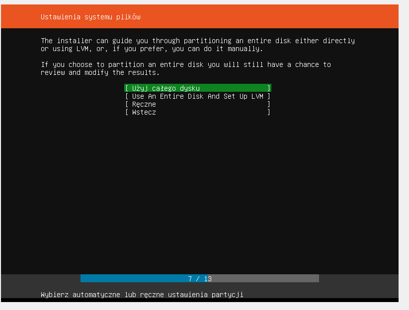
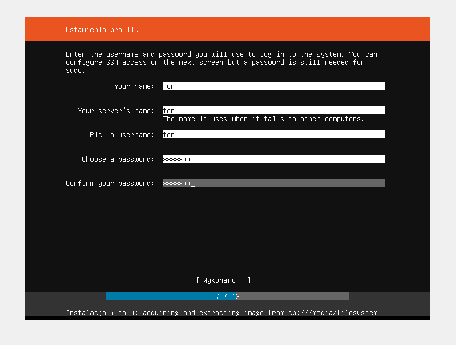
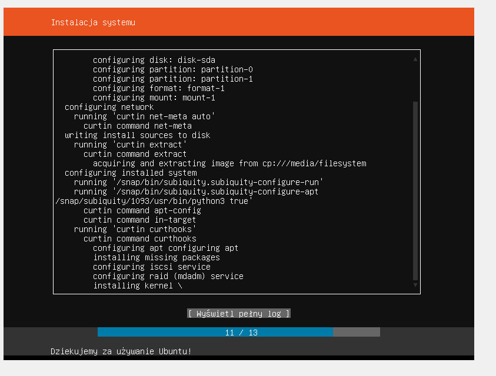
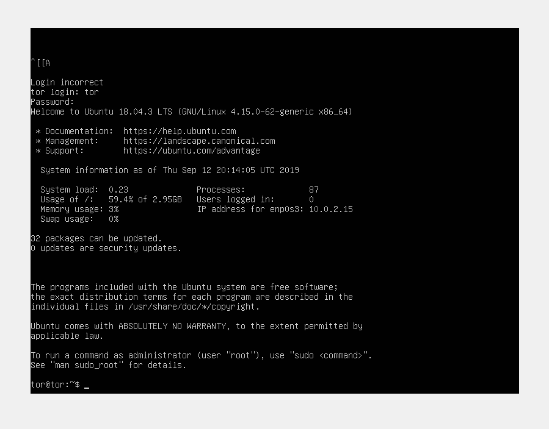